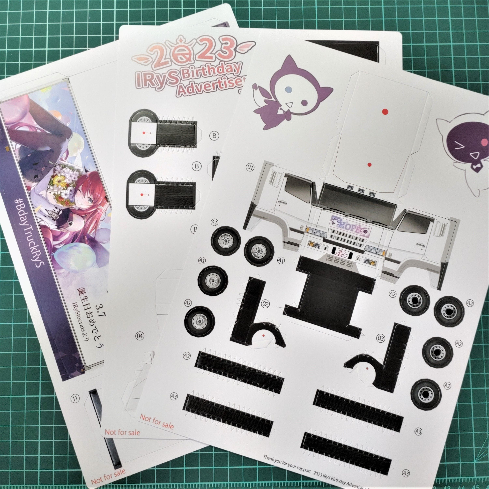
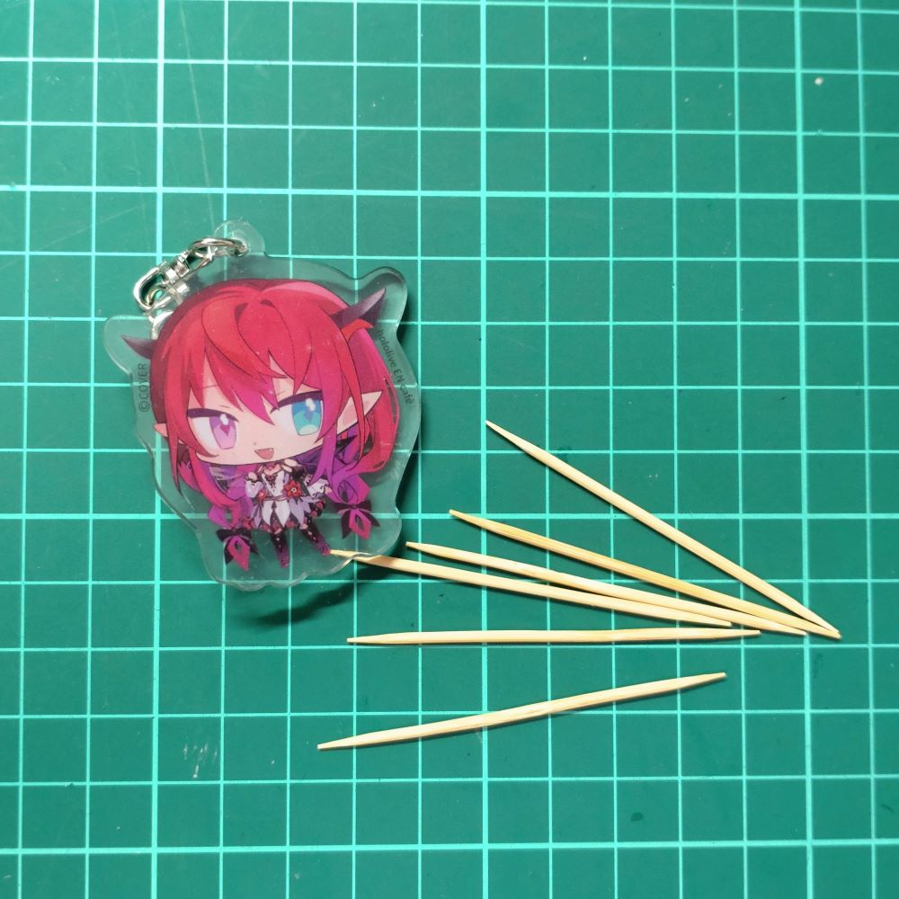
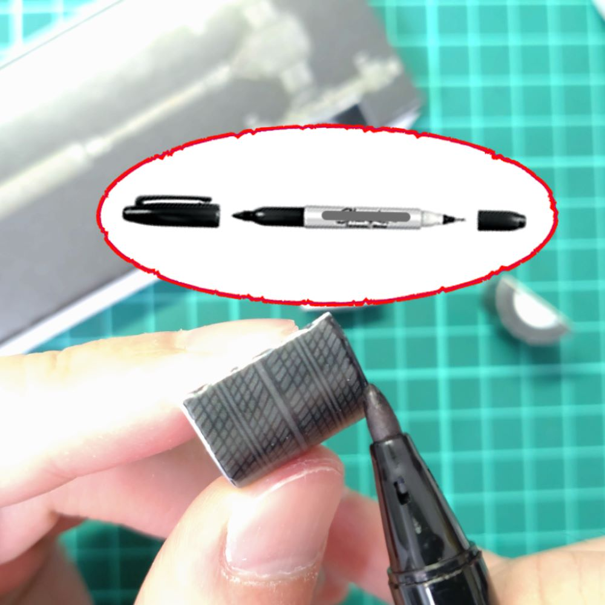
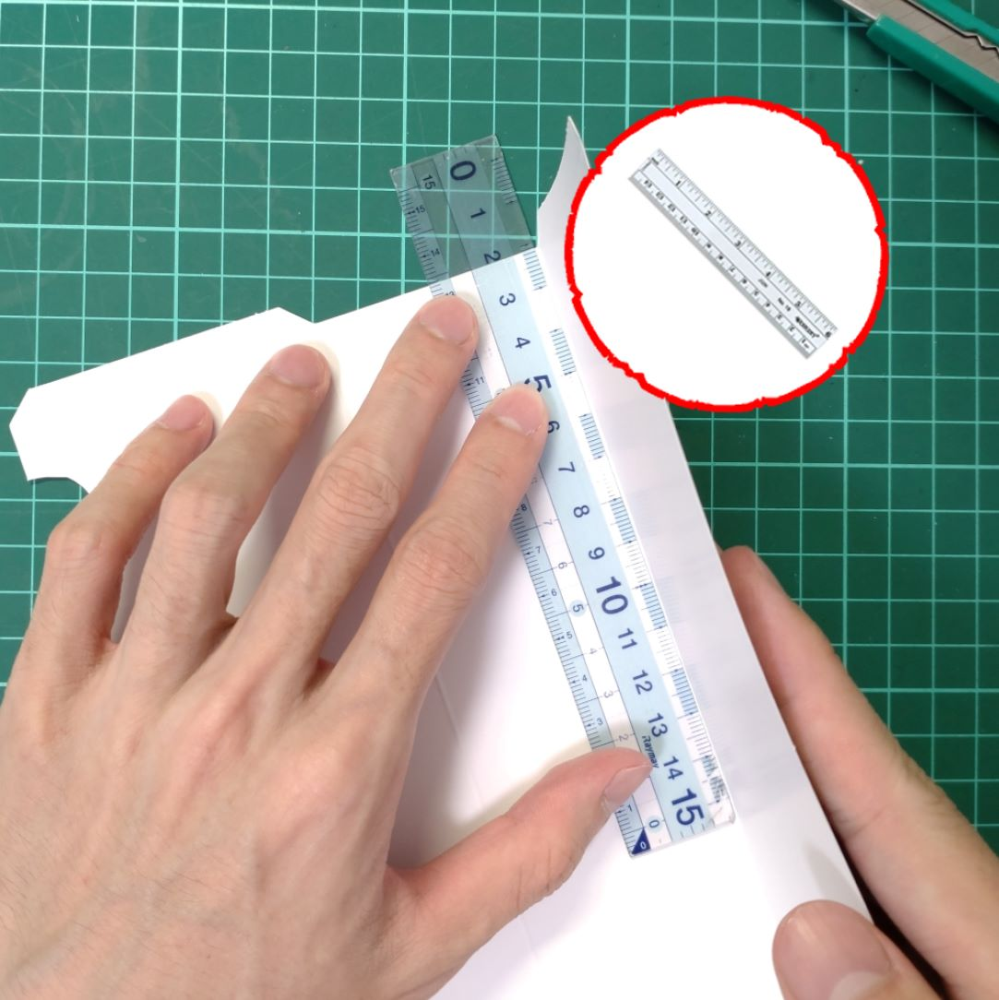
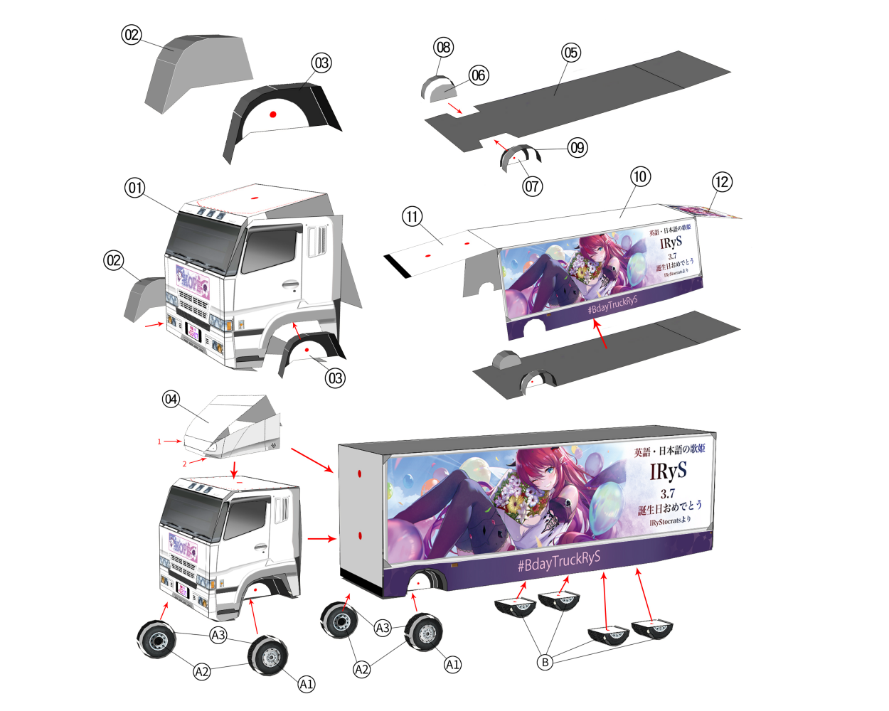

What we need?

Design Crafting Paper x3
Take out your design paper and your patience. Let's get started!

IRySuper-DuperGlue
I mean white glue, elmer's glue, school glue, etc.
If the white glue you bought is too wet, you can open the lid and let it solidify a bit before use. It will stick better

Toothpicks
Use toothpicks to help us apply the white glue.
Option Tools

Tweezers
The front end of the tweezers shouldn’t be too pointed.

A marker pen
Used to touch up the white edges of the model.

A Ruler
The ruler can help us score and fold the sheet along the fold line.

A small, round stick or chopstick
The front end of the tweezers shouldn’t be too pointed.
For every step:
- If there are any difficulty on removing the parts, you can use a utility knife or craft knife to gently cut them before taking them off.
- If the removed parts have creases on it, fold it with a ruler in advance.
- Use a toothpick when applying glue. Thinly applied glue gives a neater finish!
- Wait until the glue is almost dry before proceeding to the next step.
.jpg)
Step 0: Take an overview!
- Before we begin, let’s have a quick look at your diagram showing each of the parts.
- Please refer to this diagram if you are lost on which part to glue together and on which side.

Step 1: Start from the easy part!
- Take parts number 5, 6, and 7, and glue parts 6 and 7 onto part 5 as shown on the right picture.
.jpg)
Step 2:Roll, Roll, Roll!
- Gently roll part 8 and 9 with a round stick, and glue them onto the just-made chassis base as shown on the right picture.
.jpg)
Step 3: Make four half-circle tires
- Take four pieces of part B, roll each piece of the tire section (part B) with a round stick, and glue the bonding parts to make four semi-circular tires.
- Optional: use a marker pen to touch up the white edge of the tires black.
.jpg)
Step 4: Install the Semi-Circular tires
- Install the wheel tires: Glue the four semi-circular tires (part B x4) onto the bottom of the chassis (part 5).
.jpg)
Step 5: Making the front tires of the carriage
- Take parts A1 x2, A2 x2, A3 x2 and use a round stick to gently curve the A3 part (tire tread). Then attach the inner and outer sides of the tire in order.
- Note: The picture for the inner and outer sides of the tires are different, don't stick the same side together!
- Optional: Touch up the white edge of the tires.
.jpg)
Step 6: Making the carriage I
- Glue the upper edge of parts 11 and 12 onto the carriage (part 10).
.jpg)
Step 7: Making the carriage II
- Glue the bottom side of part 10 to the previously made chassis (part5).
- Since bottom part of parts 11 and 12 have not glued to part 10 yet, it is easy to reach inside and secure the connection between part 10 and part 5.
.jpg)
Step 8: Making the carriage II
- Glue the bottom of parts 12 and 11 to part 10.
.jpg)
Step 9: Install the front tires of the carriage
- Glue the two tires made in step 5 to the open space at the front of the carriage. Now the carriage part is complete!
- Keep up the good work, we are halfway through!
.jpg)
Step 10: Making the front part of the truck
- Take parts 2 and 3, roll the curved sections with a round stick as shown in the picture.
- Then, glue the inner joints as the picture.
.jpg)
Step 11: Let's make another set of tires!
- Just like Step 5! Make two complete tires with part A1 x2, A2 x2, A3 x2.
.jpg)
Step 12: Making the truck cab I:
- Take part 1 and fold it into a rough shape according to the picture and creases.
- Then, take the previously made parts 2 and 3 and glue them to the bottom of the part 1.
.jpg)
Step 13:Making the truck cab II:
- There are many parts to be glued here, be patient~~~(ง •̀ω•́)ง
- If it's difficult to glue, take it one step at a time~♪ and wait for the previous step to dry before moving on to the next one.
.jpg)
Step 14: Installing the fairing I:
- Take part 4, gently roll the top and side parts with a round stick. Glue the front half of the base and wait for it to dry.
.jpg)
Step 15: Installing the fairing II:
- As shown in the picture, slowly glue it from front to back, bit by bit. Finally, put on the rear side cover.
.jpg)
Step 16: Installing the wheels and fairing to the cab:
- Attach the fairing (part 4) and two tires (A1-A3) to the truck cab (part 1).
.jpg)
Step 17: Combining the truck cab and the trailer:
- Glue the truck cab and the trailer we made before.
.jpg)
Step 18: Congratulations, you've completed the TruckRyS!
- Take a photo of your TruckRyS with your IRyS merch and share it on Twitter with the project specific hashtag to record these memories!
.jpg)